Canto I
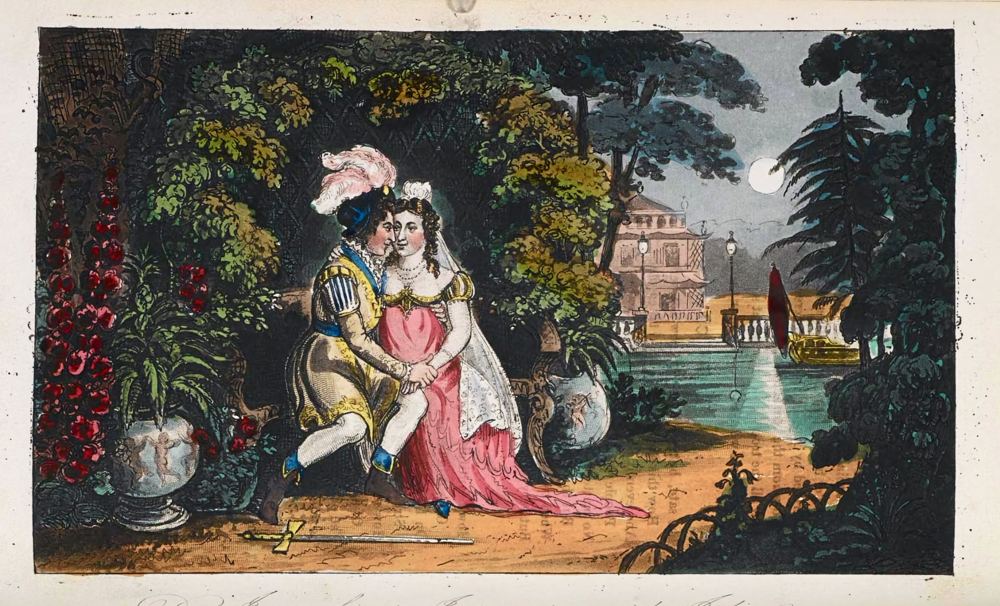
| Some selections from Canto I | ||
|---|---|---|
| Donna Inez introduced: Seville and the Guadalquivir; Don Jose’s Hidalgo pedigree | In virtues nothing earthly could surpass her, / Save thine ’incomparable oil,’ Macassar! | VIII–XVIII |
| Juan’s education — Inez censors the classics: natural history forbidden | They only add them all in an appendix, / Which saves… the trouble of an index | XXXIX–XLV |
| Juan at sixteen; Donna Julia: her appearance, Moorish ancestry, marriage to Don Alfonso | She was married, charming, chaste, and twenty-three | LIV–LIX |
| The seduction scene: the sixth of June; the garden bower, the moonrise; the capitulation | And whispering ’I will ne’er consent’ — consented. | CII–CXVII |
| Julia’s bedroom; Alfonso’s midnight posse; Julia’s harangue defending her honour; Juan hidden in the bed | ’T was midnight — Donna Julia was in bed, /… when at her door / Arose a clatter might awake the dead | CXXXIV–CLXIV |
| Denouement: the incriminating shoes discovered; the fight; Juan’s naked escape over the garden wall | He fled, like Joseph, leaving it; but there, / I doubt, all likeness ends between the pair. | CLXV–CLXXXVII |
| Julia’s letter from the convent: a lyrical interlude in a different register — grief without self-pity | Man’s love is of man’s life a thing apart, / ’T is woman’s whole existence | CXCII–CXCVIII |
| Byron’s mock-epic programme; poetical "commandments" dismissing contemporary poets; the bribed British Review | Thou shalt believe in Milton, Dryden, Pope; / Thou shalt not set up Wordsworth, Coleridge, Southey | CXCIX–CCXI |
Difficile est proprie communia dicereHorace, Epistola ad Pisones
I want a hero: an uncommon want,
When every year and month sends forth a new one,
Till, after cloying the gazettes with cant,
The age discovers he is not the true one;
Of such as these I should not care to vaunt,
I'll therefore take our ancient friend Don Juan–
We all have seen him, in the pantomime,
Sent to the devil somewhat ere his time.
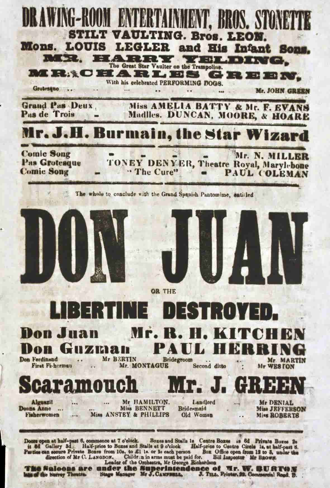
I want a Hero…
Byron begins with an abrupt focus on his main subject: himself and his ironic disaffection. If he lacks or needs a hero — “want” has both senses — the fault lies with England and the Age. At the height of its post-Napoleonic ascendency in Europe, the country has no heroes; only forgettable pretenders or ’butchers’. He might as well borrow a hero, or villain, from the pantomime: a protagonist whose reputation as a high born rogue and seducer recalls his own, after he fled England in 1816. Byron’s reputation was only (somewhat) unfair. Juan, however, is nothing like the roué of the Pantomime. Rather, he is modest, earnest, passive and unreflective. He’s a dashing lad, but a serial monogamist who has little to say, and when he offers an opinion, it is conventional. Machismo minus. Of course, epic poems never start in the first person or without a well-known hero. Byron wants to advertise his readiness to flaunt the rules. He’s even more explicit about this in Stanza VI — which was the second stanza in an early draft. But there’s another irony in this first phrase, too. Byron’s epic never finds a Hero: only Heroines. And several of those.
Vernon, the butcher Cumberland, Wolfe, Hawke,
Prince Ferdinand, Granby, Burgoyne, Keppel, Howe,
Evil and good, have had their tithe of talk,
And fill'd their sign posts then, like Wellesley now;
Each in their turn like Banquo's monarchs stalk,
Followers of fame, “nine farrow" of that sow:
France, too, had Buonaparté and Dumourier
Recorded in the Moniteur and Courier.
Barnave, Brissot, Condorcet, Mirabeau,
Petion, Clootz, Danton, Marat, La Fayette,
Were French, and famous people, as we know:
And there were others, scarce forgotten yet,
Joubert, Hoche, Marceau, Lannes, Desaix, Moreau,
With many of the military set,
Exceedingly remarkable at times,
But not at all adapted to my rhymes.
Nelson was once Britannia's god of war,
And still should be so, but the tide is turn'd;
There's no more to be said of Trafalgar,
'T is with our hero quietly inurn'd;
Because the army's grown more popular,
At which the naval people are concern'd;
Besides, the prince is all for the land-service,
Forgetting Duncan, Nelson, Howe, and Jervis.
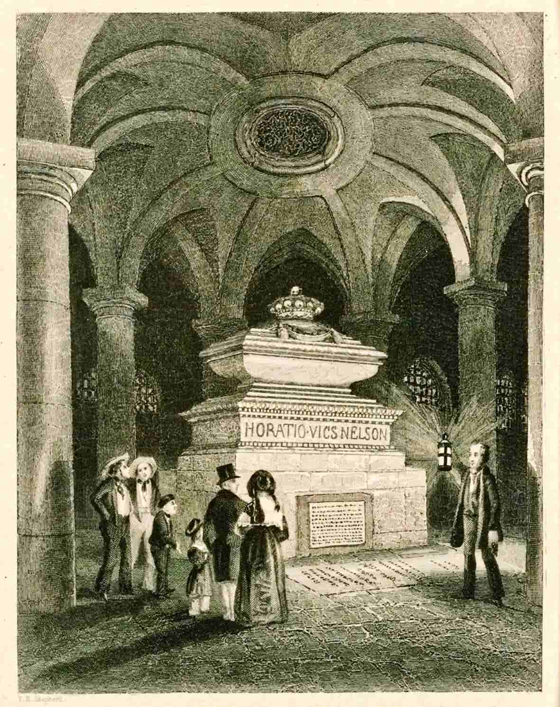
Brave men were living before Agamemnon
And since, exceeding valorous and sage,
A good deal like him too, though quite the same none;
But then they shone not on the poet's page,
And so have been forgotten:—I condemn none,
But can't find any in the present age
Fit for my poem (that is, for my new one);
So, as I said, I'll take my friend Don Juan.
Most epic poets plunge “in medias res"
(Horace makes this the heroic turnpike road),
And then your hero tells, whene'er you please,
What went before—by way of episode,
While seated after dinner at his ease,
Beside his mistress in some soft abode,
Palace, or garden, paradise, or cavern,
Which serves the happy couple for a tavern.
That is the usual method, but not mine—
My way is to begin with the beginning;
The regularity of my design
Forbids all wandering as the worst of sinning,
And therefore I shall open with a line
(Although it cost me half an hour in spinning)
Narrating somewhat of Don Juan's father,
And also of his mother, if you'd rather.
In Seville was he born, a pleasant city,
Famous for oranges and women—he
Who has not seen it will be much to pity,
So says the proverb—and I quite agree;
Of all the Spanish towns is none more pretty,
Cadiz perhaps—but that you soon may see;
Don Juan's parents lived beside the river,
A noble stream, and call'd the Guadalquivir.
His father's name was Jóse—”Don”, of course,—
A true Hidalgo, free from every stain
Of Moor or Hebrew blood, he traced his source
Through the most Gothic gentlemen of Spain;
A better cavalier ne'er mounted horse,
Or, being mounted, e'er got down again,
Than Jóse, who begot our hero, who
Begot—but that's to come—Well, to renew:
His mother was a learnéd lady, famed
For every branch of every science known
In every Christian language ever named,
With virtues equall'd by her wit alone,
She made the cleverest people quite ashamed,
And even the good with inward envy groan,
Finding themselves so very much exceeded
In their own way by all the things that she did.
Her memory was a mine: she knew by heart
All Calderon and greater part of Lopé,
So that if any actor miss'd his part
She could have served him for the prompter's copy;
For her Feinagle's were an useless art,
And he himself obliged to shut up shop — he
Could never make a memory so fine as
That which adorn'd the brain of Donna Inez.

Her favourite science was the mathematical,
Her noblest virtue was her magnanimity,
Her wit (she sometimes tried at wit) was Attic all,
Her serious sayings darken'd to sublimity;
In short, in all things she was fairly what I call
A prodigy —her morning dress was dimity,
Her evening silk, or, in the summer, muslin,
And other stuffs, with which I won't stay puzzling.
She knew the Latin—that is, “the Lord's prayer,"
And Greek—the alphabet—I'm nearly sure;
She read some French romances here and there,
Although her mode of speaking was not pure;
For native Spanish she had no great care,
At least her conversation was obscure;
Her thoughts were theorems, her words a problem,
As if she deem'd that mystery would ennoble 'em.
She liked the English and the Hebrew tongue,
And said there was analogy between 'em;
She proved it somehow out of sacred song,
But I must leave the proofs to those who've seen 'em;
But this I heard her say, and can't be wrong
And all may think which way their judgments lean 'em,
“'T is strange—the Hebrew noun which means 'I am,'
The English always used to govern d — n."
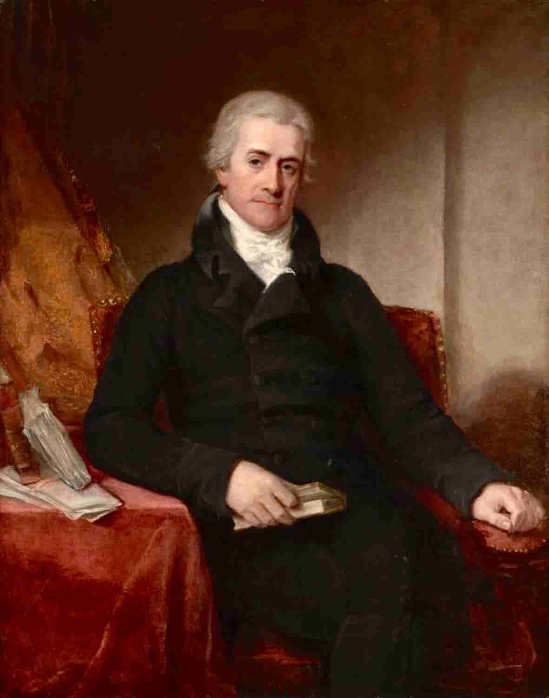
Some women use their tongues—she “look'd” a lecture,
Each eye a sermon, and her brow a homily,
An all-in-all sufficient self-director,
Like the lamented late Sir Samuel Romilly,
The Law's expounder, and the State's corrector,
Whose suicide was almost an anomaly—
One sad example more, that “All is vanity"
(The jury brought their verdict in “Insanity").
In short, she was a walking calculation,
Miss Edgeworth's novels stepping from their covers,
Or Mrs. Trimmer's books on education,
Or “Coelebs' Wife" set out in quest of lovers,
Morality's prim personification,
In which not Envy's self a flaw discovers;
To others' share let “female errors fall,"
For she had not even one—the worst of all.
Oh! she was perfect past all parallel—
Of any modern female saint's comparison;
So far above the cunning powers of hell,
Her guardian angel had given up his garrison;
Even her minutest motions went as well
As those of the best time-piece made by Harrison:
In virtues nothing earthly could surpass her,
Save thine “incomparable oil," Macassar!
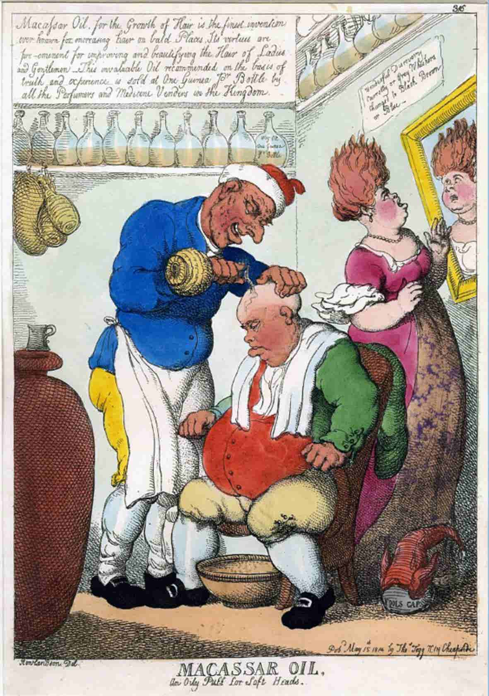
Perfect she was, but as perfection is
Insipid in this naughty world of ours,
Where our first parents never learn'd to kiss
Till they were exiled from their earlier bowers,
Where all was peace, and innocence, and bliss
(I wonder how they got through the twelve hours),
Don Jóse, like a lineal son of Eve,
Went plucking various fruit without her leave.
He was a mortal of the careless kind,
With no great love for learning, or the learn'd,
Who chose to go where'er he had a mind,
And never dream'd his lady was concern'd;
The world, as usual, wickedly inclined
To see a kingdom or a house o'erturn'd,
Whisper'd he had a mistress, some said “two”—
But for domestic quarrels “one” will do.
Now Donna Inez had, with all her merit,
A great opinion of her own good qualities;
Neglect, indeed, requires a saint to bear it,
And such, indeed, she was in her moralities;
But then she had a devil of a spirit,
And sometimes mix'd up fancies with realities,
And let few opportunities escape
Of getting her liege lord into a scrape.
This was an easy matter with a man
Oft in the wrong, and never on his guard;
And even the wisest, do the best they can,
Have moments, hours, and days, so unprepared,
That you might “brain them with their lady's fan;"
And sometimes ladies hit exceeding hard,
And fans turn into falchions in fair hands,
And why and wherefore no one understands.
'T is pity learnéd virgins ever wed
With persons of no sort of education,
Or gentlemen, who, though well born and bred,
Grow tired of scientific conversation:
I don't choose to say much upon this head,
I'm a plain man, and in a single station,
But—Oh! ye lords of ladies intellectual,
Inform us truly, have they not hen-peck'd you all?
Don Jóse and his lady quarrell'd—”why”,
Not any of the many could divine,
Though several thousand people chose to try,
'T was surely no concern of theirs nor mine;
I loathe that low vice—curiosity;
But if there's anything in which I shine,
'T is in arranging all my friends' affairs,
Not having of my own domestic cares.
And so I interfered, and with the best
Intentions, but their treatment was not kind;
I think the foolish people were possess'd,
For neither of them could I ever find,
Although their porter afterwards confess'd—
But that's no matter, and the worst's behind,
For little Juan o'er me threw, down stairs,
A pail of housemaid's water unawares.
A little curly-headed, good-for-nothing,
And mischief-making monkey from his birth;
His parents ne'er agreed except in doting
Upon the most unquiet imp on earth;
Instead of quarrelling, had they been but both in
Their senses, they'd have sent young master forth
To school, or had him soundly whipp'd at home,
To teach him manners for the time to come.
Don Jóse and the Donna Inez led
For some time an unhappy sort of life,
Wishing each other, not divorced, but dead;
They lived respectably as man and wife,
Their conduct was exceedingly well-bred,
And gave no outward signs of inward strife,
Until at length the smother'd fire broke out,
And put the business past all kind of doubt.
For Inez call'd some druggists and physicians,
And tried to prove her loving lord was “mad”;
But as he had some lucid intermissions,
She next decided he was only “bad”;
Yet when they ask'd her for her depositions,
No sort of explanation could be had,
Save that her duty both to man and God
Required this conduct—which seem'd very odd.
She kept a journal, where his faults were noted,
And open'd certain trunks of books and letters,
All which might, if occasion served, be quoted;
And then she had all Seville for abettors,
Besides her good old grandmother (who doted);
The hearers of her case became repeaters,
Then advocates, inquisitors, and judges,
Some for amusement, others for old grudges.
And then this best and weakest woman bore
With such serenity her husband's woes,
Just as the Spartan ladies did of yore,
Who saw their spouses kill'd, and nobly chose
Never to say a word about them more—
Calmly she heard each calumny that rose,
And saw “his” agonies with such sublimity,
That all the world exclaim'd, “What magnanimity!”
No doubt this patience, when the world is damning us,
Is philosophic in our former friends;
'T is also pleasant to be deem'd magnanimous,
The more so in obtaining our own ends;
And what the lawyers call a “malus animus”
Conduct like this by no means comprehends;
Revenge in person's certainly no virtue,
But then 't is not “my” fault, if “others” hurt you.
And if your quarrels should rip up old stories,
And help them with a lie or two additional,
I'm not to blame, as you well know—no more is
Any one else—they were become traditional;
Besides, their resurrection aids our glories
By contrast, which is what we just were wishing all:
And science profits by this resurrection—
Dead scandals form good subjects for dissection.
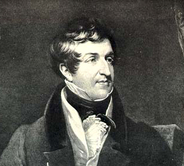
Their friends had tried at reconciliation,
Then their relations, who made matters worse.
('T were hard to tell upon a like occasion
To whom it may be best to have recourse—
I can't say much for friend or yet relation):
The lawyers did their utmost for divorce,
But scarce a fee was paid on either side
Before, unluckily, Don Jóse died.
He died: and most unluckily, because,
According to all hints I could collect
From counsel learnéd in those kinds of laws
(Although their talk's obscure and circumspect),
His death contrived to spoil a charming cause;
A thousand pities also with respect
To public feeling, which on this occasion
Was manifested in a great sensation.
But, ah! he died; and buried with him lay
The public feeling and the lawyers' fees:
His house was sold, his servants sent away,
A Jew took one of his two mistresses,
A priest the other—at least so they say:
I ask'd the doctors after his disease—
He died of the slow fever call'd the tertian,
And left his widow to her own aversion.
Yet Jóse was an honourable man,
That I must say who knew him very well;
Therefore his frailties I'll no further scan
Indeed there were not many more to tell;
And if his passions now and then outran
Discretion, and were not so peaceable
As Numa's (who was also named Pompilius),
He had been ill brought up, and was born bilious.
Whate'er might be his worthlessness or worth,
Poor fellow! he had many things to wound him.
Let's own—since it can do no good on earth—
It was a trying moment that which found him
Standing alone beside his desolate hearth,
Where all his household gods lay shiver'd round him:
No choice was left his feelings or his pride,
Save death or Doctors' Commons - so he died.
Dying intestate, Juan was sole heir
To a chancery suit, and messuages, and lands,
Which, with a long minority and care,
Promised to turn out well in proper hands:
Inez became sole guardian, which was fair,
And answer'd but to nature's just demands;
An only son left with an only mother
Is brought up much more wisely than another.
Sagest of women, even of widows, she
Resolved that Juan should be quite a paragon,
And worthy of the noblest pedigree
(His sire was of Castile, his dam from Aragon):
Then for accomplishments of chivalry,
In case our lord the king should go to war again,
He learn'd the arts of riding, fencing, gunnery,
And how to scale a fortress—or a nunnery.
But that which Donna Inez most desired,
And saw into herself each day before all
The learnéd tutors whom for him she hired,
Was, that his breeding should be strictly moral;
Much into all his studies she inquired,
And so they were submitted first to her, all,
Arts, sciences, no branch was made a mystery
To Juan's eyes, excepting natural history.
The languages, especially the dead,
The sciences, and most of all the abstruse,
The arts, at least all such as could be said
To be the most remote from common use,
In all these he was much and deeply read;
But not a page of any thing that's loose,
Or hints continuation of the species,
Was ever suffer'd, lest he should grow vicious.
His classic studies made a little puzzle,
Because of filthy loves of gods and goddesses,
Who in the earlier ages raised a bustle,
But never put on pantaloons or bodices;
His reverend tutors had at times a tussle,
And for their “\AE neids”, “Iliads”, and “Odysseys”,
Were forced to make an odd sort of apology,
For Donna Inez dreaded the Mythology.
Ovid's a rake, as half his verses show him,
Anacreon's morals are a still worse sample,
Catullus scarcely has a decent poem,
I don't think Sappho's “Ode” a good example,
Although Longinus tells us there is no hymn
Where the sublime soars forth on wings more ample:
But Virgil's songs are pure, except that horrid one
Beginning with “Formosum Pastor Corydon”.
Lucretius' irreligion is too strong,
For early stomachs, to prove wholesome food;
I can't help thinking Juvenal was wrong,
Although no doubt his real intent was good,
For speaking out so plainly in his song,
So much indeed as to be downright rude;
And then what proper person can be partial
To all those nauseous epigrams of Martial?
Juan was taught from out the best edition,
Expurgated by learnéd men, who place
Judiciously, from out the schoolboy's vision,
The grosser parts; but, fearful to deface
Too much their modest bard by this omission,
And pitying sore his mutilated case,
They only add them all in an appendix,
Which saves, in fact, the trouble of an index;
For there we have them all “at one fell swoop,"
Instead of being scatter'd through the Pages;
They stand forth marshall'd in a handsome troop,
To meet the ingenuous youth of future ages,
Till some less rigid editor shall stoop
To call them back into their separate cages,
Instead of standing staring all together,
Like garden gods—and not so decent either.
The Missal too (it was the family Missal)
Was ornamented in a sort of way
Which ancient mass-books often are, and this all
Kinds of grotesques illumined; and how they,
Who saw those figures on the margin kiss all,
Could turn their optics to the text and pray,
Is more than I know—But Don Juan's mother
Kept this herself, and gave her son another.
Sermons he read, and lectures he endured,
And homilies, and lives of all the saints;
To Jerome and to Chrysostom inured,
He did not take such studies for restraints;
But how faith is acquired, and then ensured,
So well not one of the aforesaid paints
As Saint Augustine in his fine Confessions,
Which make the reader envy his transgressions.
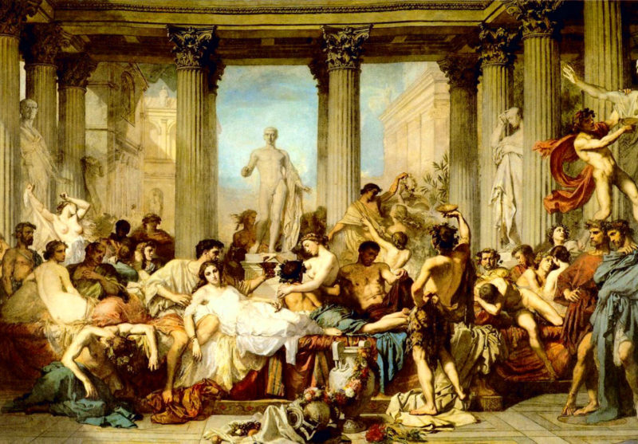
This, too, was a seal'd book to little Juan—
I can't but say that his mamma was right,
If such an education was the true one.
She scarcely trusted him from out her sight;
Her maids were old, and if she took a new one,
You might be sure she was a perfect fright;
She did this during even her husband's life—
I recommend as much to every wife.
Young Juan wax'd in goodliness and grace;
At six a charming child, and at eleven
With all the promise of as fine a face
As e'er to man's maturer growth was given:
He studied steadily, and grew apace,
And seem'd, at least, in the right road to heaven,
For half his days were pass'd at church, the other
Between his tutors, confessor, and mother.
At six, I said, he was a charming child,
At twelve he was a fine, but quiet boy;
Although in infancy a little wild,
They tamed him down amongst them: to destroy
His natural spirit not in vain they toil'd,
At least it seem'd so; and his mother's joy
Was to declare how sage, and still, and steady,
Her young philosopher was grown already.
I had my doubts, perhaps I have them still,
But what I say is neither here nor there:
I knew his father well, and have some skill
In character—but it would not be fair
From sire to son to augur good or ill:
He and his wife were an ill-sorted pair—
But scandal's my aversion—I protest
Against all evil speaking, even in jest.
For my part I say nothing—nothing—but
“This” I will say—my reasons are my own—
That if I had an only son to put
To school (as God be praised that I have none),
'T is not with Donna Inez I would shut
Him up to learn his catechism alone,
No—no—I'd send him out betimes to college,
For there it was I pick'd up my own knowledge.
For there one learns—'t is not for me to boast,
Though I acquired—but I pass over that,
As well as all the Greek I since have lost:
I say that there's the place—but “Verbum sat".
I think I pick'd up too, as well as most,
Knowledge of matters—but no matter what—
I never married—but, I think, I know
That sons should not be educated so.
Young Juan now was sixteen years of age,
Tall, handsome, slender, but well knit: he seem'd
Active, though not so sprightly, as a page;
And everybody but his mother deem'd
Him almost man; but she flew in a rage
And bit her lips (for else she might have scream'd)
If any said so, for to be precocious
Was in her eyes a thing the most atrocious.
Amongst her numerous acquaintance, all
Selected for discretion and devotion,
There was the Donna Julia, whom to call
Pretty were but to give a feeble notion
Of many charms in her as natural
As sweetness to the flower, or salt to ocean,
Her zone to Venus, or his bow to Cupid
(But this last simile is trite and stupid).
The darkness of her Oriental eye
Accorded with her Moorish origin
(Her blood was not all Spanish, by the by;
In Spain, you know, this is a sort of sin);
When proud Granada fell, and, forced to fly,
Boabdil wept, of Donna Julia's kin
Some went to Africa, some stay'd in Spain,
Her great-great-grandmamma chose to remain.
She married (I forget the pedigree)
With an Hidalgo, who transmitted down
His blood less noble than such blood should be;
At such alliances his sires would frown,
In that point so precise in each degree
That they bred “in and in”, as might be shown,
Marrying their cousins—nay, their aunts, and nieces,
Which always spoils the breed, if it increases.
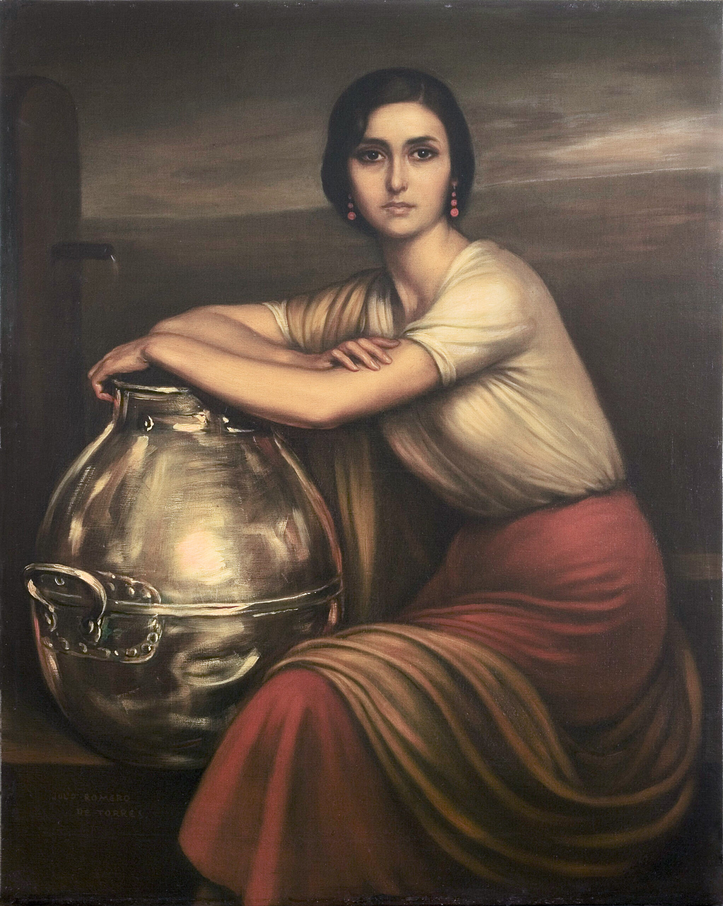
This heathenish cross restored the breed again,
Ruin'd its blood, but much improved its flesh;
For from a root the ugliest in Old Spain
Sprung up a branch as beautiful as fresh;
The sons no more were short, the daughters plain:
But there's a rumour which I fain would hush,
'T is said that Donna Julia's grandmamma
Produced her Don more heirs at love than law.
However this might be, the race went on
Improving still through every generation,
Until it centred in an only son,
Who left an only daughter; my narration
May have suggested that this single one
Could be but Julia (whom on this occasion
I shall have much to speak about), and she
Was married, charming, chaste, and twenty-three.
Her eye (I'm very fond of handsome eyes)
Was large and dark, suppressing half its fire
Until she spoke, then through its soft disguise
Flash'd an expression more of pride than ire,
And love than either; and there would arise
A something in them which was not desire,
But would have been, perhaps, but for the soul
Which struggled through and chasten'd down the whole.
Her glossy hair was cluster'd o'er a brow
Bright with intelligence, and fair, and smooth;
Her eyebrow's shape was like th' aerial bow,
Her cheek all purple with the beam of youth,
Mounting at times to a transparent glow,
As if her veins ran lightning; she, in sooth,
Possess'd an air and grace by no means common:
Her stature tall—I hate a dumpy woman.
Wedded she was some years, and to a man
Of fifty, and such husbands are in plenty;
And yet, I think, instead of such a one
'T were better to have two of five-and-twenty,
Especially in countries near the sun:
And now I think on 't, “mi vien in mente,"
Ladies even of the most uneasy virtue
Prefer a spouse whose age is short of thirty.
'T is a sad thing, I cannot choose but say,
And all the fault of that indecent sun,
Who cannot leave alone our helpless clay,
But will keep baking, broiling, burning on,
That howsoever people fast and pray,
The flesh is frail, and so the soul undone:
What men call gallantry, and gods adultery,
Is much more common where the climate's sultry.
Happy the nations of the moral North!
Where all is virtue, and the winter season
Sends sin, without a rag on, shivering forth
('T was snow that brought St. Anthony to reason);
Where juries cast up what a wife is worth,
By laying whate'er sum in mulct they please on
The lover, who must pay a handsome price,
Because it is a marketable vice.
Alfonso was the name of Julia's lord,
A man well looking for his years, and who
Was neither much beloved nor yet abhorr'd:
They lived together, as most people do,
Suffering each other's foibles by accord,
And not exactly either “one” or “two”;
Yet he was jealous, though he did not show it,
For jealousy dislikes the world to know it.
Julia was—yet I never could see why—
With Donna Inez quite a favourite friend;
Between their tastes there was small sympathy,
For not a line had Julia ever penn'd:
Some people whisper but no doubt they lie,
For malice still imputes some private end)
That Inez had, ere Don Alfonso's marriage,
Forgot with him her very prudent carriage;
And that still keeping up the old connection,
Which time had lately render'd much more chaste,
She took his lady also in affection,
And certainly this course was much the best:
She flatter'd Julia with her sage protection,
And complimented Don Alfonso's taste;
And if she could not (who can?) silence scandal,
At least she left it a more slender handle.
I can't tell whether Julia saw the affair
With other people's eyes, or if her own
Discoveries made, but none could be aware
Of this, at least no symptom e'er was shown;
Perhaps she did not know, or did not care,
Indifferent from the first or callous grown:
I'm really puzzled what to think or say,
She kept her counsel in so close a way.
Juan she saw, and, as a pretty child,
Caress'd him often—such a thing might be
Quite innocently done, and harmless styled,
When she had twenty years, and thirteen he;
But I am not so sure I should have smiled
When he was sixteen, Julia twenty-three;
These few short years make wondrous alterations,
Particularly amongst sun-burnt nations.
Whate'er the cause might be, they had become
Changed; for the dame grew distant, the youth shy,
Their looks cast down, their greetings almost dumb,
And much embarrassment in either eye;
There surely will be little doubt with some
That Donna Julia knew the reason why,
But as for Juan, he had no more notion
Than he who never saw the sea of ocean.
Yet Julia's very coldness still was kind,
And tremulously gentle her small hand
Withdrew itself from his, but left behind
A little pressure, thrilling, and so bland
And slight, so very slight, that to the mind
'T was but a doubt; but ne'er magician's wand
Wrought change with all Armida's fairy art
Like what this light touch left on Juan's heart.
And if she met him, though she smiled no more,
She look'd a sadness sweeter than her smile,
As if her heart had deeper thoughts in store
She must not own, but cherish'd more the while
For that compression in its burning core;
Even innocence itself has many a wile,
And will not dare to trust itself with truth,
And love is taught hypocrisy from youth.
But passion most dissembles, yet betrays
Even by its darkness; as the blackest sky
Foretells the heaviest tempest, it displays
Its workings through the vainly guarded eye,
And in whatever aspect it arrays
Itself, 't is still the same hypocrisy;
Coldness or anger, even disdain or hate,
Are masks it often wears, and still too late.
Then there were sighs, the deeper for suppression,
And stolen glances, sweeter for the theft,
And burning blushes, though for no transgression,
Tremblings when met, and restlessness when left;
All these are little preludes to possession,
Of which young passion cannot be bereft,
And merely tend to show how greatly love is
Embarrass'd at first starting with a novice.
Poor Julia's heart was in an awkward state;
She felt it going, and resolved to make
The noblest efforts for herself and mate,
For honour's, pride's, religion's, virtue's sake;
Her resolutions were most truly great,
And almost might have made a Tarquin quake:
She pray'd the Virgin Mary for her grace,
As being the best judge of a lady's case.
She vow'd she never would see Juan more,
And next day paid a visit to his mother,
And look'd extremely at the opening door,
Which, by the Virgin's grace, let in another;
Grateful she was, and yet a little sore—
Again it opens, it can be no other,
'T is surely Juan now—No! I'm afraid
That night the Virgin was no further pray'd.
She now determined that a virtuous woman
Should rather face and overcome temptation,
That flight was base and dastardly, and no man
Should ever give her heart the least sensation;
That is to say, a thought beyond the common
Preference, that we must feel upon occasion
For people who are pleasanter than others,
But then they only seem so many brothers.
And even if by chance—and who can tell?
The devil's so very sly—she should discover
That all within was not so very well,
And, if still free, that such or such a lover
Might please perhaps, a virtuous wife can quell
Such thoughts, and be the better when they're over;
And if the man should ask, 't is but denial:
I recommend young ladies to make trial.
And then there are such things as love divine,
Bright and immaculate, unmix'd and pure,
Such as the angels think so very fine,
And matrons who would be no less secure,
Platonic, perfect, “just such love as mine;"
Thus Julia said—and thought so, to be sure;
And so I'd have her think, were I the man
On whom her reveries celestial ran.
Such love is innocent, and may exist
Between young persons without any danger.
A hand may first, and then a lip be kist;
For my part, to such doings I'm a stranger,
But hear these freedoms form the utmost list
Of all o'er which such love may be a ranger:
If people go beyond, 't is quite a crime,
But not my fault—I tell them all in time.
Love, then, but love within its proper limits,
Was Julia's innocent determination
In young Don Juan's favour, and to him its
Exertion might be useful on occasion;
And, lighted at too pure a shrine to dim its
Ethereal lustre, with what sweet persuasion
He might be taught, by love and her together—
I really don't know what, nor Julia either.
Fraught with this fine intention, and well fenced
In mail of proof — her purity of soul —
She, for the future of her strength convinced.
And that her honour was a rock, or mole,
Exceeding sagely from that hour dispensed
With any kind of troublesome control;
But whether Julia to the task was equal
Is that which must be mention'd in the sequel.
Her plan she deem'd both innocent and feasible,
And, surely, with a stripling of sixteen
Not scandal's fangs could fix on much that's seizable,
Or if they did so, satisfied to mean
Nothing but what was good, her breast was peaceable—
A quiet conscience makes one so serene!
Christians have burnt each other, quite persuaded
That all the Apostles would have done as they did.
And if in the mean time her husband died,
But Heaven forbid that such a thought should cross
Her brain, though in a dream! (and then she sigh'd)
Never could she survive that common loss;
But just suppose that moment should betide,
I only say suppose it—inter nos.
(This should be entre nous, for Julia thought
In French, but then the rhyme would go for naught.)
I only say suppose this supposition:
Juan being then grown up to man's estate
Would fully suit a widow of condition,
Even seven years hence it would not be too late;
And in the interim (to pursue this vision)
The mischief, after all, could not be great,
For he would learn the rudiments of love,
I mean the “seraph” way of those above.
So much for Julia. Now we'll turn to Juan.
Poor little fellow! he had no idea
Of his own case, and never hit the true one;
In feelings quick as Ovid's Miss Medea,
He puzzled over what he found a new one,
But not as yet imagined it could be
Thing quite in course, and not at all alarming,
Which, with a little patience, might grow charming.
Silent and pensive, idle, restless, slow,
His home deserted for the lonely wood,
Tormented with a wound he could not know,
His, like all deep grief, plunged in solitude:
I'm fond myself of solitude or so,
But then, I beg it may be understood,
By solitude I mean a sultan's, not
A hermit's, with a haram for a grot.
“Oh Love! in such a wilderness as this,
Where transport and security entwine,
Here is the empire of thy perfect bliss,
And here thou art a god indeed divine."
The bard I quote from does not sing amiss,
With the exception of the second line,
For that same twining “transport and security"
Are twisted to a phrase of some obscurity.
The poet meant, no doubt, and thus appeals
To the good sense and senses of mankind,
The very thing which every body feels,
As all have found on trial, or may find,
That no one likes to be disturb'd at meals
Or love.—I won't say more about “entwined"
Or “transport," as we knew all that before,
But beg'security' will bolt the door.
Young Juan wander'd by the glassy brooks,
Thinking unutterable things; he threw
Himself at length within the leafy nooks
Where the wild branch of the cork forest grew;
There poets find materials for their books,
And every now and then we read them through,
So that their plan and prosody are eligible,
Unless, like Wordsworth, they prove unintelligible.
He, Juan (and not Wordsworth), so pursued
His self-communion with his own high soul,
Until his mighty heart, in its great mood,
Had mitigated part, though not the whole
Of its disease; he did the best he could
With things not very subject to control,
And turn'd, without perceiving his condition,
Like Coleridge, into a metaphysician.
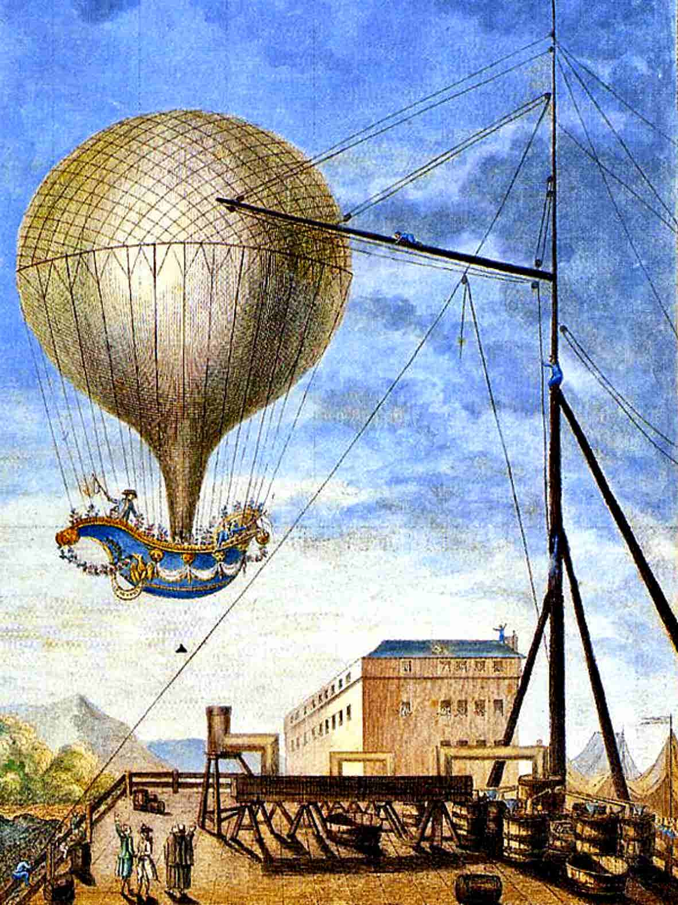
He thought about himself, and the whole earth
Of man the wonderful, and of the stars,
And how the deuce they ever could have birth;
And then he thought of earthquakes, and of wars,
How many miles the moon might have in girth,
Of air-balloons, and of the many bars
To perfect knowledge of the boundless skies;—
And then he thought of Donna Julia's eyes.
In thoughts like these true wisdom may discern
Longings sublime, and aspirations high,
Which some are born with, but the most part learn
To plague themselves withal, they know not why:
'T was strange that one so young should thus concern
His brain about the action of the sky;
If you think 't was philosophy that this did,
I can't help thinking puberty assisted.
He pored upon the leaves, and on the flowers,
And heard a voice in all the winds; and then
He thought of wood-nymphs and immortal bowers,
And how the goddesses came down to men:
He miss'd the pathway, he forgot the hours,
And when he look'd upon his watch again,
He found how much old Time had been a winner—
He also found that he had lost his dinner.
Sometimes he turn'd to gaze upon his book,
Boscan, or Garcilasso;—by the wind
Even as the page is rustled while we look,
So by the poesy of his own mind
Over the mystic leaf his soul was shook,
As if 't were one whereon magicians bind
Their spells, and give them to the passing gale,
According to some good old woman's tale.
Thus would he while his lonely hours away
Dissatisfied, nor knowing what he wanted;
Nor glowing reverie, nor poet's lay,
Could yield his spirit that for which it panted,
A bosom whereon he his head might lay,
And hear the heart beat with the love it granted,
With—several other things, which I forget,
Or which, at least, I need not mention yet.
Those lonely walks, and lengthening reveries,
Could not escape the gentle Julia's eyes;
She saw that Juan was not at his ease;
But that which chiefly may, and must surprise,
Is, that the Donna Inez did not tease
Her only son with question or surmise:
Whether it was she did not see, or would not,
Or, like all very clever people, could not.
This may seem strange, but yet 't is very common;
For instance—gentlemen, whose ladies take
Leave to o'erstep the written rights of woman,
And break the—Which commandment is 't they break?
(I have forgot the number, and think no man
Should rashly quote, for fear of a mistake.)
I say, when these same gentlemen are jealous,
They make some blunder, which their ladies tell us.
A real husband always is suspicious,
But still no less suspects in the wrong place,
Jealous of some one who had no such wishes,
Or pandering blindly to his own disgrace,
By harbouring some dear friend extremely vicious;
The last indeed's infallibly the case:
And when the spouse and friend are gone off wholly,
He wonders at their vice, and not his folly.
Thus parents also are at times short-sighted;
Though watchful as the lynx, they ne'er discover,
The while the wicked world beholds delighted,
Young Hopeful's mistress, or Miss Fanny's lover,
Till some confounded escapade has blighted
The plan of twenty years, and all is over;
And then the mother cries, the father swears,
And wonders why the devil he got heirs.
But Inez was so anxious, and so clear
Of sight, that I must think, on this occasion,
She had some other motive much more near
For leaving Juan to this new temptation;
But what that motive was, I sha'n't say here;
Perhaps to finish Juan's education,
Perhaps to open Don Alfonso's eyes,
In case he thought his wife too great a prize.
It was upon a day, a summer's day;—
Summer's indeed a very dangerous season,
And so is spring about the end of May;
The sun, no doubt, is the prevailing reason;
But whatsoe'er the cause is, one may say,
And stand convicted of more truth than treason,
That there are months which nature grows more merry in,—
March has its hares, and May must have its heroine.
'T was on a summer's day—the sixth of June:—
I like to be particular in dates,
Not only of the age, and year, but moon;
They are a sort of post-house, where the Fates
Change horses, making history change its tune,
Then spur away o'er empires and o'er states,
Leaving at last not much besides chronology,
Excepting the post-obits of theology.
'T was on the sixth of June, about the hour
Of half-past six—perhaps still nearer seven—
When Julia sate within as pretty a bower
As e'er held houri in that heathenish heaven
Described by Mahomet, and Anacreon Moore,
To whom the lyre and laurels have been given,
With all the trophies of triumphant song—
He won them well, and may he wear them long!
She sate, but not alone; I know not well
How this same interview had taken place,
And even if I knew, I should not tell—
People should hold their tongues in any case;
No matter how or why the thing befell,
But there were she and Juan, face to face—
When two such faces are so, 't would be wise,
But very difficult, to shut their eyes.
How beautiful she look'd! her conscious heart
Glow'd in her cheek, and yet she felt no wrong.
Oh Love! how perfect is thy mystic art,
Strengthening the weak, and trampling on the strong,
How self-deceitful is the sagest part
Of mortals whom thy lure hath led along—
The precipice she stood on was immense,
So was her creed in her own innocence.
She thought of her own strength, and Juan's youth,
And of the folly of all prudish fears,
Victorious virtue, and domestic truth,
And then of Don Alfonso's fifty years:
I wish these last had not occurr'd, in sooth,
Because that number rarely much endears,
And through all climes, the snowy and the sunny,
Sounds ill in love, whate'er it may in money.
When people say, “I've told you “fifty” times,"
They mean to scold, and very often do;
When poets say, “I've written “fifty” rhymes,"
They make you dread that they'll recite them too;
In gangs of “fifty”, thieves commit their crimes;
At “fifty” love for love is rare, 't is true,
But then, no doubt, it equally as true is,
A good deal may be bought for “fifty” Louis.
Julia had honour, virtue, truth, and love,
For Don Alfonso; and she inly swore,
By all the vows below to powers above,
She never would disgrace the ring she wore,
Nor leave a wish which wisdom might reprove;
And while she ponder'd this, besides much more,
One hand on Juan's carelessly was thrown,
Quite by mistake—she thought it was her own;
Unconsciously she lean'd upon the other,
Which play'd within the tangles of her hair:
And to contend with thoughts she could not smother
She seem'd by the distraction of her air.
'T was surely very wrong in Juan's mother
To leave together this imprudent pair,
She who for many years had watch'd her son so—
I'm very certain “mine” would not have done so.
The hand which still held Juan's, by degrees
Gently, but palpably confirm'd its grasp,
As if it said, “Detain me, if you please;"
Yet there's no doubt she only meant to clasp
His fingers with a pure Platonic squeeze:
She would have shrunk as from a toad, or asp,
Had she imagined such a thing could rouse
A feeling dangerous to a prudent spouse.
I cannot know what Juan thought of this,
But what he did, is much what you would do;
His young lip thank'd it with a grateful kiss,
And then, abash'd at its own joy, withdrew
In deep despair, lest he had done amiss,—
Love is so very timid when 't is new:
She blush'd, and frown'd not, but she strove to speak,
And held her tongue, her voice was grown so weak.
The sun set, and up rose the yellow moon:
The devil's in the moon for mischief; they
Who call'd her CHASTE, methinks, began too soon
Their nomenclature; there is not a day,
The longest, not the twenty-first of June,
Sees half the business in a wicked way
On which three single hours of moonshine smile—
And then she looks so modest all the while.
There is a dangerous silence in that hour,
A stillness, which leaves room for the full soul
To open all itself, without the power
Of calling wholly back its self-control;
The silver light which, hallowing tree and tower,
Sheds beauty and deep softness o'er the whole,
Breathes also to the heart, and o'er it throws
A loving languor, which is not repose.
And Julia sate with Juan, half embraced
And half retiring from the glowing arm,
Which trembled like the bosom where 't was placed;
Yet still she must have thought there was no harm,
Or else 't were easy to withdraw her waist;
But then the situation had its charm,
And then—— God knows what next—I can't go on;
I'm almost sorry that I e'er begun.
Oh Plato! Plato! you have paved the way,
With your confounded fantasies, to more
Immoral conduct by the fancied sway
Your system feigns o'er the controulless core
Of human hearts, than all the long array
Of poets and romancers:—You're a bore,
A charlatan, a coxcomb—and have been,
At best, no better than a go-between.
And Julia's voice was lost, except in sighs,
Until too late for useful conversation;
The tears were gushing from her gentle eyes,
I wish indeed they had not had occasion,
But who, alas! can love, and then be wise?
Not that remorse did not oppose temptation;
A little still she strove, and much repented
And whispering “I will ne'er consent"—consented.
'T is said that Xerxes offer'd a reward
To those who could invent him a new pleasure:
Methinks the requisition's rather hard,
And must have cost his majesty a treasure:
For my part, I'm a moderate-minded bard,
Fond of a little love (which I call leisure);
I care not for new pleasures, as the old
Are quite enough for me, so they but hold.
Oh Pleasure! you are indeed a pleasant thing,
Although one must be damn'd for you, no doubt:
I make a resolution every spring
Of reformation, ere the year run out,
But somehow, this my vestal vow takes wing,
Yet still, I trust it may be kept throughout:
I'm very sorry, very much ashamed,
And mean, next winter, to be quite reclaim'd.
Here my chaste Muse a liberty must take—
Start not! still chaster reader—she'll be nice hence—
Forward, and there is no great cause to quake;
This liberty is a poetic licence,
Which some irregularity may make
In the design, and as I have a high sense
Of Aristotle and the Rules, 't is fit
To beg his pardon when I err a bit.
This licence is to hope the reader will
Suppose from June the sixth (the fatal day,
Without whose epoch my poetic skill
For want of facts would all be thrown away),
But keeping Julia and Don Juan still
In sight, that several months have pass'd; we'll say
'T was in November544, but I'm not so sure
About the day—the era's more obscure.
We'll talk of that anon.—'T is sweet to hear
At midnight on the blue and moonlit deep
The song and oar of Adria's gondolier,
By distance mellow'd, o'er the waters sweep;
'T is sweet to see the evening star appear;
'T is sweet to listen as the night-winds creep
From leaf to leaf; 't is sweet to view on high
The rainbow, based on ocean, span the sky.
'T is sweet to hear the watch-dog's honest bark
Bay deep-mouth'd welcome as we draw near home;
'T is sweet to know there is an eye will mark
Our coming, and look brighter when we come;
'T is sweet to be awaken'd by the lark,
Or lull'd by falling waters; sweet the hum
Of bees, the voice of girls, the song of birds,
The lisp of children, and their earliest words.
Sweet is the vintage, when the showering grapes
In Bacchanal profusion reel to earth,
Purple and gushing: sweet are our escapes
From civic revelry to rural mirth;
Sweet to the miser are his glittering heaps,
Sweet to the father is his first-born's birth,
Sweet is revenge—especially to women,
Pillage to soldiers, prize-money to seamen.
Sweet is a legacy, and passing sweet
The unexpected death of some old lady
Or gentleman of seventy years complete,
Who've made “us youth" wait too—too long already
For an estate, or cash, or country seat,
Still breaking, but with stamina so steady
That all the Israelites are fit to mob its
Next owner for their double-damn'd post-obits.
'T is sweet to win, no matter how, one's laurels,
By blood or ink; 't is sweet to put an end
To strife; 't is sometimes sweet to have our quarrels,
Particularly with a tiresome friend:
Sweet is old wine in bottles, ale in barrels;
Dear is the helpless creature we defend
Against the world; and dear the schoolboy spot
We ne'er forget, though there we are forgot.
But sweeter still than this, than these, than all,
Is first and passionate love—it stands alone,
Like Adam's recollection of his fall;
The tree of knowledge has been pluck'd—all's known—
And life yields nothing further to recall
Worthy of this ambrosial sin, so shown,
No doubt in fable, as the unforgiven
Fire which Prometheus filch'd for us from heaven.
Man's a strange animal, and makes strange use
Of his own nature, and the various arts,
And likes particularly to produce
Some new experiment to show his parts;
This is the age of oddities let loose,
Where different talents find their different marts;
You'd best begin with truth, and when you've lost your
Labour, there's a sure market for imposture.
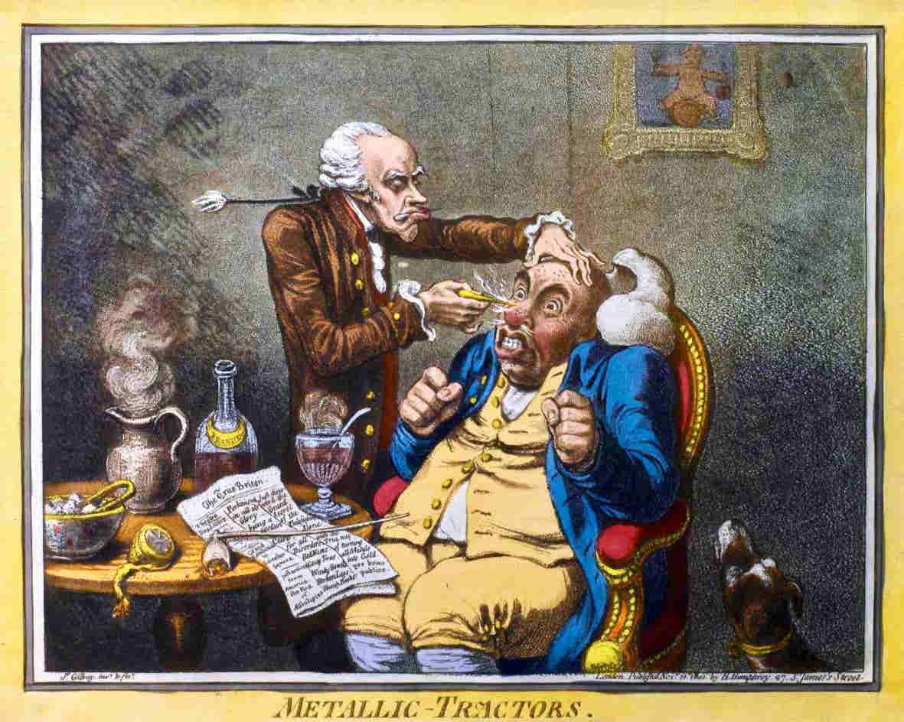
What opposite discoveries we have seen!
(Signs of true genius, and of empty pockets.)
One makes new noses, one a guillotine,
One breaks your bones, one sets them in their sockets;
But vaccination certainly has been
A kind antithesis to Congreve's rockets,
With which the Doctor paid off an old pox,
By borrowing a new one from an ox.
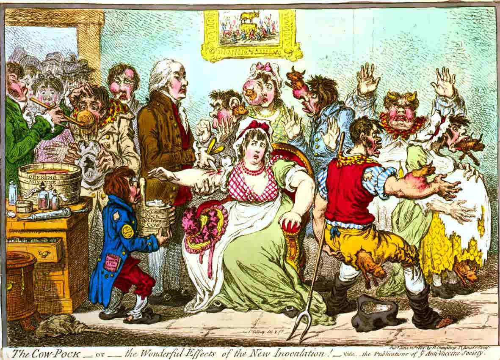
Bread has been made (indifferent) from potatoes;
And galvanism has set some corpses grinning,
But has not answer'd like the apparatus
Of the Humane Society's beginning
By which men are unsuffocated gratis:
What wondrous new machines have late been spinning!
I said the small-pox has gone out of late;
Perhaps it may be follow'd by the great.
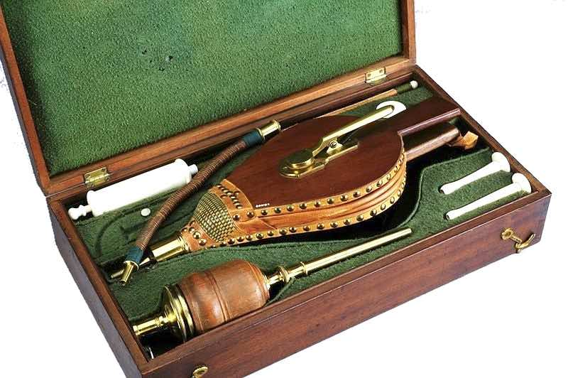
'T is said the great came from America;
Perhaps it may set out on its return,—
The population there so spreads, they say
'T is grown high time to thin it in its turn,
With war, or plague, or famine, any way,
So that civilisation they may learn;
And which in ravage the more loathsome evil is—
Their real “lues”, or our pseudo-syphilis?
This is the patent-age of new inventions
For killing bodies, and for saving souls,
All propagated with the best intentions;
Sir Humphry Davy's lantern, by which coals
Are safely mined for in the mode he mentions,
Tombuctoo travels, voyages to the Poles,
Are ways to benefit mankind, as true,
Perhaps, as shooting them at Waterloo.
Man's a phenomenon, one knows not what,
And wonderful beyond all wondrous measure;
'T is pity though, in this sublime world, that
Pleasure's a sin, and sometimes sin's a pleasure;
Few mortals know what end they would be at,
But whether glory, power, or love, or treasure,
The path is through perplexing ways, and when
The goal is gain'd, we die, you know—and then—
What then?—I do not know, no more do you—
And so good night.—Return we to our story:
'T was in November, when fine days are few,
And the far mountains wax a little hoary,
And clap a white cape on their mantles blue;
And the sea dashes round the promontory,
And the loud breaker boils against the rock,
And sober suns must set at five o'clock.
'T was, as the watchmen say, a cloudy night;
No moon, no stars, the wind was low or loud
By gusts, and many a sparkling hearth was bright
With the piled wood, round which the family crowd;
There's something cheerful in that sort of light,
Even as a summer sky's without a cloud:
I'm fond of fire, and crickets, and all that,
A lobster-sallad, and champagne, and chat.
'T was midnight—Donna Julia was in bed,
Sleeping, most probably,—when at her door
Arose a clatter might awake the dead,
If they had never been awoke before,
And that they have been so we all have read,
And are to be so, at the least, once more;—
The door was fasten'd, but with voice and fist
First knocks were heard, then “Madam—Madam—hist!—
“For God's sake, Madam—Madam—here's my master,
With more than half the city at his back—
Was ever heard of such a curst disaster!
'T is not my fault—I kept good watch—Alack!
Do pray undo the bolt a little faster—
They're on the stair just now, and in a crack
Will all be here; perhaps he yet may fly—
Surely the window's not so “very” high!"
By this time Don Alfonso was arrived,
With torches, friends, and servants in great number;
The major part of them had long been wived,
And therefore paused not to disturb the slumber
Of any wicked woman, who contrived
By stealth her husband's temples to encumber:
Examples of this kind are so contagious,
Were “one” not punish'd, “all” would be outrageous.
I can't tell how, or why, or what suspicion
Could enter into Don Alfonso's head;
But for a cavalier of his condition
It surely was exceedingly ill-bred,
Without a word of previous admonition,
To hold a levee round his lady's bed,
And summon lackeys, arm'd with fire and sword,
To prove himself the thing he most abhorr'd.
Poor Donna Julia, starting as from sleep
(Mind—that I do not say—she had not slept),
Began at once to scream, and yawn, and weep;
Her maid Antonia, who was an adept,
Contrived to fling the bed-clothes in a heap,
As if she had just now from out them crept:
I can't tell why she should take all this trouble
To prove her mistress had been sleeping double.
But Julia mistress, and Antonia maid,
Appear'd like two poor harmless women, who
Of goblins, but still more of men afraid,
Had thought one man might be deterr'd by two,
And therefore side by side were gently laid,
Until the hours of absence should run through,
And truant husband should return, and say,
“My dear, I was the first who came away."
Now Julia found at length a voice, and cried,
“In heaven's name, Don Alfonso, what d' ye mean?
Has madness seized you? would that I had died
Ere such a monster's victim I had been!
What may this midnight violence betide,
A sudden fit of drunkenness or spleen?
Dare you suspect me, whom the thought would kill?
Search, then, the room!"—Alfonso said, “I will."
“He” search'd, “they” search'd, and rummaged everywhere,
Closet and clothes' press, chest and window-seat,
And found much linen, lace, and several pair
Of stockings, slippers, brushes, combs, complete,
With other articles of ladies fair,
To keep them beautiful, or leave them neat:
Arras they prick'd and curtains with their swords,
And wounded several shutters, and some boards.
Under the bed they search'd, and there they found—
No matter what—it was not that they sought;
They open'd windows, gazing if the ground
Had signs or footmarks, but the earth said nought;
And then they stared each other's faces round:
'T is odd, not one of all these seekers thought,
And seems to me almost a sort of blunder,
Of looking in the bed as well as under.
During this inquisition, Julia's tongue
Was not asleep—"Yes, search and search," she cried,
“Insult on insult heap, and wrong on wrong!
It was for this that I became a bride!
For this in silence I have suffer'd long
A husband like Alfonso at my side;
But now I'll bear no more, nor here remain,
If there be law or lawyers in all Spain.
“Yes, Don Alfonso! husband now no more,
If ever you indeed deserved the name,
Is 't worthy of your years?—you have threescore—
Fifty, or sixty, it is all the same—
Is 't wise or fitting, causeless to explore
For facts against a virtuous woman's fame?
Ungrateful, perjured, barbarous Don Alfonso,
How dare you think your lady would go on so?
“Is it for this I have disdain'd to hold
The common privileges of my sex?
That I have chosen a confessor so old
And deaf, that any other it would vex,
And never once he has had cause to scold,
But found my very innocence perplex
So much, he always doubted I was married—
How sorry you will be when I've miscarried!
“Was it for this that no Cortejo e'er
I yet have chosen from out the youth of Seville?
Is it for this I scarce went anywhere,
Except to bull-fights, mass, play, rout, and revel?
Is it for this, whate'er my suitors were,
I favor'd none—nay, was almost uncivil?
Is it for this that General Count O'Reilly,
Who took Algiers, declares I used him vilely?
“Did not the Italian “Musico” Cazzani
Sing at my heart six months at least in vain?
Did not his countryman, Count Corniani,
Call me the only virtuous wife in Spain?
Were there not also Russians, English, many?
The Count Strongstroganoff I put in pain,
And Lord Mount Coffeehouse, the Irish peer,
Who kill'd himself for love (with wine) last year.
“Have I not had two bishops at my feet,
The Duke of Ichar, and Don Fernan Nunez?
And is it thus a faithful wife you treat?
I wonder in what quarter now the moon is:
I praise your vast forbearance not to beat
Me also, since the time so opportune is—
Oh, valiant man! with sword drawn and cock'd trigger,
Now, tell me, don't you cut a pretty figure?
“Was it for this you took your sudden journey.
Under pretence of business indispensable
With that sublime of rascals your attorney,
Whom I see standing there, and looking sensible
Of having play'd the fool? though both I spurn, he
Deserves the worst, his conduct's less defensible,
Because, no doubt, 't was for his dirty fee,
And not from any love to you nor me.
“If he comes here to take a deposition,
By all means let the gentleman proceed;
You've made the apartment in a fit condition:
There's pen and ink for you, sir, when you need—
Let every thing be noted with precision,
I would not you for nothing should be fee'd—
But, as my maid's undrest, pray turn your spies out."
“Oh!" sobb'd Antonia, “I could tear their eyes out."
“There is the closet, there the toilet, there
The antechamber—search them under, over;
There is the sofa, there the great arm-chair,
The chimney—which would really hold a lover.
I wish to sleep, and beg you will take care
And make no further noise, till you discover
The secret cavern of this lurking treasure—
And when 't is found, let me, too, have that pleasure.
“And now, Hidalgo! now that you have thrown
Doubt upon me, confusion over all,
Pray have the courtesy to make it known
“Who” is the man you search for? how d' ye call
Him? what's his lineage? let him but be shown—
I hope he's young and handsome—is he tall?
Tell me—and be assured, that since you stain
My honour thus, it shall not be in vain.
“At least, perhaps, he has not sixty years,
At that age he would be too old for slaughter,
Or for so young a husband's jealous fears
(Antonia! let me have a glass of water).
I am ashamed of having shed these tears,
They are unworthy of my father's daughter;
My mother dream'd not in my natal hour
That I should fall into a monster's power.
“Perhaps 't is of Antonia you are jealous,
You saw that she was sleeping by my side
When you broke in upon us with your fellows:
Look where you please—we've nothing, sir, to hide;
Only another time, I trust, you'll tell us,
Or for the sake of decency abide
A moment at the door, that we may be
Drest to receive so much good company.
“And now, sir, I have done, and say no more;
The little I have said may serve to show
The guileless heart in silence may grieve o'er
The wrongs to whose exposure it is slow:
I leave you to your conscience as before,
'T will one day ask you “why” you used me so?
God grant you feel not then the bitterest grief!—
Antonia! where's my pocket-handkerchief?"
She ceased, and turn'd upon her pillow; pale
She lay, her dark eyes flashing through their tears,
Like skies that rain and lighten; as a veil,
Waved and o'ershading her wan cheek, appears
Her streaming hair; the black curls strive, but fail,
To hide the glossy shoulder, which uprears
Its snow through all;—her soft lips lie apart,
And louder than her breathing beats her heart.
The Senhor Don Alfonso stood confused;
Antonia bustled round the ransack'd room,
And, turning up her nose, with looks abused
Her master and his myrmidons, of whom
Not one, except the attorney, was amused;
He, like Achates, faithful to the tomb,
So there were quarrels, cared not for the cause,
Knowing they must be settled by the laws.
With prying snub-nose, and small eyes, he stood,
Following Antonia's motions here and there,
With much suspicion in his attitude;
For reputations he had little care;
So that a suit or action were made good,
Small pity had he for the young and fair,
And ne'er believed in negatives, till these
Were proved by competent false witnesses.
But Don Alfonso stood with downcast looks,
And, truth to say, he made a foolish figure;
When, after searching in five hundred nooks,
And treating a young wife with so much rigour,
He gain'd no point, except some self-rebukes,
Added to those his lady with such vigour
Had pour'd upon him for the last half-hour,
Quick, thick, and heavy—as a thunder-shower.
At first he tried to hammer an excuse,
To which the sole reply was tears and sobs,
And indications of hysterics, whose
Prologue is always certain throes, and throbs,
Gasps, and whatever else the owners choose:
Alfonso saw his wife, and thought of Job's;
He saw too, in perspective, her relations,
And then he tried to muster all his patience.
He stood in act to speak, or rather stammer,
But sage Antonia cut him short before
The anvil of his speech received the hammer,
With “Pray, sir, leave the room, and say no more,
Or madam dies."—Alfonso mutter'd, “D—n her,"
But nothing else, the time of words was o'er;
He cast a rueful look or two, and did,
He knew not wherefore, that which he was bid.
With him retired his “posse comitatus,"
The attorney last, who linger'd near the door
Reluctantly, still tarrying there as late as
Antonia let him—not a little sore
At this most strange and unexplain'd “hiatus"
In Don Alfonso's facts, which just now wore
An awkward look; as he revolved the case,
The door was fasten'd in his legal face.
No sooner was it bolted, than—Oh shame!
Oh sin! Oh sorrow! and oh womankind!
How can you do such things and keep your fame,
Unless this world, and t' other too, be blind?
Nothing so dear as an unfilch'd good name!
But to proceed—for there is more behind:
With much heartfelt reluctance be it said,
Young Juan slipp'd half-smother'd, from the bed.
He had been hid—I don't pretend to say
How, nor can I indeed describe the where—
Young, slender, and pack'd easily, he lay,
No doubt, in little compass, round or square;
But pity him I neither must nor may
His suffocation by that pretty pair;
'T were better, sure, to die so, than be shut
With maudlin Clarence in his Malmsey butt.
And, secondly, I pity not, because
He had no business to commit a sin,
Forbid by heavenly, fined by human laws,
At least 't was rather early to begin;
But at sixteen the conscience rarely gnaws
So much as when we call our old debts in
At sixty years, and draw the accompts of evil,
And find a deuced balance with the devil.
Of his position I can give no notion:
'T is written in the Hebrew Chronicle,
How the physicians, leaving pill and potion,
Prescribed, by way of blister, a young belle,
When old King David's blood grew dull in motion,
And that the medicine answer'd very well;
Perhaps 't was in a different way applied,
For David lived, but Juan nearly died.
What's to be done? Alfonso will be back
The moment he has sent his fools away.
Antonia's skill was put upon the rack,
But no device could be brought into play—
And how to parry the renew'd attack?
Besides, it wanted but few hours of day:
Antonia puzzled; Julia did not speak,
But press'd her bloodless lip to Juan's cheek.
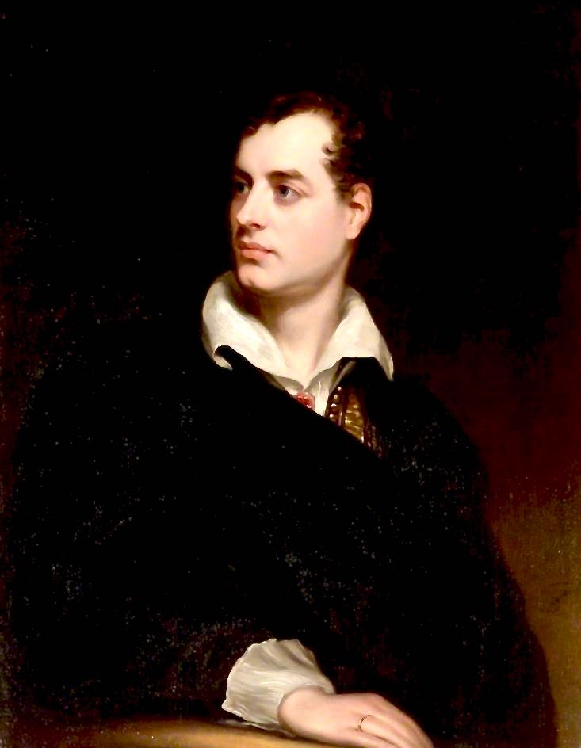
He turn'd his lip to hers, and with his hand
Call'd back the tangles of her wandering hair;
Even then their love they could not all command,
And half forgot their danger and despair:
Antonia's patience now was at a stand—
“Come, come, 't is no time now for fooling there,"
She whisper'd, in great wrath—"I must deposit
This pretty gentleman within the closet:
“Pray, keep your nonsense for some luckier night—
“Who” can have put my master in this mood?
What will become on 't—I'm in such a fright,
The devil's in the urchin, and no good—
Is this a time for giggling? this a plight?
Why, don't you know that it may end in blood?
You'll lose your life, and I shall lose my place,
My mistress all, for that half-girlish face.
“Had it but been for a stout cavalier
Of twenty-five or thirty (come, make haste)—
But for a child, what piece of work is here!
I really, madam, wonder at your taste
(Come, sir, get in)—my master must be near:
There, for the present, at the least, he's fast,
And if we can but till the morning keep
Our counsel—(Juan, mind, you must not sleep)."
Now, Don Alfonso entering, but alone,
Closed the oration of the trusty maid:
She loiter'd, and he told her to be gone,
An order somewhat sullenly obey'd;
However, present remedy was none,
And no great good seem'd answer'd if she stay'd:
Regarding both with slow and sidelong view,
She snuff'd the candle, curtsied, and withdrew.
Alfonso paused a minute—then begun
Some strange excuses for his late proceeding;
He would not justify what he had done,
To say the best, it was extreme ill-breeding;
But there were ample reasons for it, none
Of which he specified in this his pleading:
His speech was a fine sample, on the whole,
Of rhetoric, which the learn'd call “rigmarole".
Julia said nought; though all the while there rose
A ready answer, which at once enables
A matron, who her husband's foible knows,
By a few timely words to turn the tables,
Which, if it does not silence, still must pose,—
Even if it should comprise a pack of fables;
'T is to retort with firmness, and when he
Suspects with “one”, do you reproach with “three”.
Julia, in fact, had tolerable grounds,—
Alfonso's loves with Inez were well known,
But whether 't was that one's own guilt confounds—
But that can't be, as has been often shown,
A lady with apologies abounds;—
It might be that her silence sprang alone
From delicacy to Don Juan's ear,
To whom she knew his mother's fame was dear.
There might be one more motive, which makes two;
Alfonso ne'er to Juan had alluded,—
Mention'd his jealousy but never who
Had been the happy lover, he concluded,
Conceal'd amongst his premises; 't is true,
His mind the more o'er this its mystery brooded;
To speak of Inez now were, one may say,
Like throwing Juan in Alfonso's way.
A hint, in tender cases, is enough;
Silence is best, besides there is a “tact”—
(That modern phrase appears to me sad stuff,
But it will serve to keep my verse compact)—
Which keeps, when push'd by questions rather rough,
A lady always distant from the fact:
The charming creatures lie with such a grace,
There's nothing so becoming to the face.
They blush, and we believe them; at least I
Have always done so; 't is of no great use,
In any case, attempting a reply,
For then their eloquence grows quite profuse;
And when at length they 're out of breath, they sigh,
And cast their languid eyes down, and let loose
A tear or two, and then we make it up;
And then—and then—and then—sit down and sup.
Alfonso closed his speech, and begg'd her pardon,
Which Julia half withheld, and then half granted,
And laid conditions he thought very hard on,
Denying several little things he wanted:
He stood like Adam lingering near his garden,
With useless penitence perplex'd and haunted,
Beseeching she no further would refuse,
When, lo! he stumbled o'er a pair of shoes.
A pair of shoes!—what then? not much, if they
Are such as fit with ladies' feet, but these
(No one can tell how much I grieve to say)
Were masculine; to see them, and to seize,
Was but a moment's act.—Ah! well-a-day!
My teeth begin to chatter, my veins freeze—
Alfonso first examined well their fashion,
And then flew out into another passion.
He left the room for his relinquish'd sword,
And Julia instant to the closet flew.
“Fly, Juan, fly! for heaven's sake—not a word—
The door is open—you may yet slip through
The passage you so often have explored—
Here is the garden-key—Fly—fly—Adieu!
Haste—haste! I hear Alfonso's hurrying feet—
Day has not broke—there's no one in the street:"
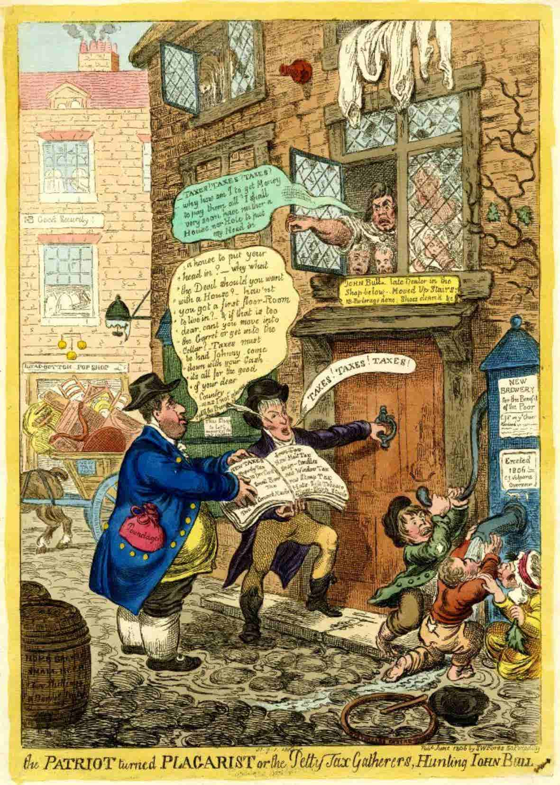
None can say that this was not good advice,
The only mischief was, it came too late;
Of all experience 't is the usual price,
A sort of income-tax laid on by fate:
Juan had reach'd the room-door in a trice,
And might have done so by the garden-gate,
But met Alfonso in his dressing-gown,
Who threaten'd death—so Juan knock'd him down.
Dire was the scuffle, and out went the light;
Antonia cried out “Rape!" and Julia “Fire!"
But not a servant stirr'd to aid the fight.
Alfonso, pommell'd to his heart's desire,
Swore lustily he'd be revenged this night;
And Juan, too, blasphemed an octave higher;
His blood was up: though young, he was a Tartar,
And not at all disposed to prove a martyr.
Alfonso's sword had dropp'd ere he could draw it,
And they continued battling hand to hand,
For Juan very luckily ne'er saw it;
His temper not being under great command,
If at that moment he had chanced to claw it,
Alfonso's days had not been in the land
Much longer.—Think of husbands', lovers' lives!
And how ye may be doubly widows—wives!
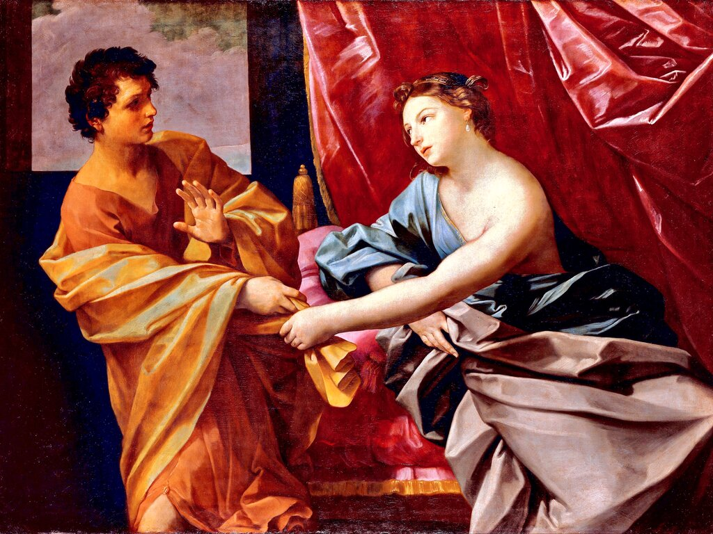
Alfonso grappled to detain the foe,
And Juan throttled him to get away,
And blood ('t was from the nose) began to flow;
At last, as they more faintly wrestling lay,
Juan contrived to give an awkward blow,
And then his only garment quite gave way;
He fled, like Joseph, leaving it; but there,
I doubt, all likeness ends between the pair.
Lights came at length, and men, and maids, who found
An awkward spectacle their eyes before;
Antonia in hysterics, Julia swoon'd,
Alfonso leaning, breathless, by the door;
Some half-torn drapery scatter'd on the ground,
Some blood, and several footsteps, but no more:
Juan the gate gain'd, turn'd the key about,
And liking not the inside, lock'd the out.
Here ends this canto.—Need I sing, or say,
How Juan naked, favour'd by the night,
Who favours what she should not, found his way,
And reach'd his home in an unseemly plight?
The pleasant scandal which arose next day,
The nine days' wonder which was brought to light,
And how Alfonso sued for a divorce,
Were in the English newspapers, of course.
If you would like to see the whole proceedings,
The depositions, and the cause at full,
The names of all the witnesses, the pleadings
Of counsel to nonsuit, or to annul,
There's more than one edition, and the readings
Are various, but they none of them are dull;
The best is that in short-hand ta'en by Gurney,
Who to Madrid on purpose made a journey.
But Donna Inez, to divert the train
Of one of the most circulating scandals
That had for centuries been known in Spain,
At least since the retirement of the Vandals,
First vow'd (and never had she vow'd in vain)
To Virgin Mary several pounds of candles;
And then, by the advice of some old ladies,
She sent her son to be shipp'd off from Cadiz.
She had resolved that he should travel through
All European climes, by land or sea,
To mend his former morals, and get new,
Especially in France and Italy
(At least this is the thing most people do).
Julia was sent into a convent: she
Grieved, but, perhaps, her feelings may be better
Shown in the following copy of her Letter:—
“They tell me 't is decided; you depart:
'T is wise—'t is well, but not the less a pain;
I have no further claim on your young heart,
Mine is the victim, and would be again;
To love too much has been the only art
I used;—I write in haste, and if a stain
Be on this sheet, 't is not what it appears;
My eyeballs burn and throb, but have no tears.
“I loved, I love you, for this love have lost
State, station, heaven, mankind's, my own esteem,
And yet can not regret what it hath cost,
So dear is still the memory of that dream;
Yet, if I name my guilt, 't is not to boast,
None can deem harshlier of me than I deem:
I trace this scrawl because I cannot rest—
I've nothing to reproach, or to request.
“Man's love is of man's life a thing apart,
'T is woman's whole existence; man may range
The court, camp, church, the vessel, and the mart;
Sword, gown, gain, glory, offer in exchange
Pride, fame, ambition, to fill up his heart,
And few there are whom these cannot estrange;
Men have all these resources, we but one,
To love again, and be again undone.
“You will proceed in pleasure, and in pride,
Beloved and loving many; all is o'er
For me on earth, except some years to hide
My shame and sorrow deep in my heart's core;
These I could bear, but cannot cast aside
The passion which still rages as before—
And so farewell—forgive me, love me—No,
That word is idle now—but let it go.
“My breast has been all weakness, is so yet;
But still I think I can collect my mind;
My blood still rushes where my spirit's set,
As roll the waves before the settled wind;
My heart is feminine, nor can forget—
To all, except one image, madly blind;
So shakes the needle, and so stands the pole,
As vibrates my fond heart to my fix'd soul.
“I have no more to say, but linger still,
And dare not set my seal upon this sheet,
And yet I may as well the task fulfil,
My misery can scarce be more complete:
I had not lived till now, could sorrow kill;
Death shuns the wretch who fain the blow would meet,
And I must even survive this last adieu,
And bear with life, to love and pray for you!"
This note was written upon gilt-edged paper
With a neat little crow-quill, slight and new:
Her small white hand could hardly reach the taper,
It trembled as magnetic needles do,
And yet she did not let one tear escape her;
The seal a sun-flower; “”Elle vous suit partout”,"
The motto cut upon a white cornelian;
The wax was superfine, its hue vermilion.
This was Don Juan's earliest scrape; but whether
I shall proceed with his adventures is
Dependent on the public altogether;
We'll see, however, what they say to this:
Their favour in an author's cap's a feather,
And no great mischief's done by their caprice;
And if their approbation we experience,
Perhaps they'll have some more about a year hence.
My poem's epic, and is meant to be
Divided in twelve books; each book containing,
With love, and war, a heavy gale at sea,
A list of ships, and captains, and kings reigning,
New characters; the episodes are three:
A panoramic view of hell's in training,
After the style of Virgil and of Homer,
So that my name of Epic's no misnomer.
All these things will be specified in time,
With strict regard to Aristotle's rules,
The “Vade Mecum” of the true sublime,
Which makes so many poets, and some fools:
Prose poets like blank-verse, I'm fond of rhyme,
Good workmen never quarrel with their tools;
I've got new mythological machinery,
And very handsome supernatural scenery.
There's only one slight difference between
Me and my epic brethren gone before,
And here the advantage is my own, I ween
(Not that I have not several merits more,
But this will more peculiarly be seen);
They so embellish, that 't is quite a bore
Their labyrinth of fables to thread through,
Whereas this story's actually true.
If any person doubt it, I appeal
To history, tradition, and to facts,
To newspapers, whose truth all know and feel,
To plays in five, and operas in three acts;
All these confirm my statement a good deal,
But that which more completely faith exacts
Is that myself, and several now in Seville,
“Saw” Juan's last elopement with the devil.
If ever I should condescend to prose,
I'll write poetical commandments, which
Shall supersede beyond all doubt all those
That went before; in these I shall enrich
My text with many things that no one knows,
And carry precept to the highest pitch:
I'll call the work “Longinus o'er a Bottle,
Or, Every Poet his “own” Aristotle."
Thou shalt believe in Milton, Dryden, Pope;
Thou shalt not set up Wordsworth, Coleridge, Southey;
Because the first is crazed beyond all hope,
The second drunk, the third so quaint and mouthy:
With Crabbe it may be difficult to cope,
And Campbell's Hippocrene is somewhat drouthy:
Thou shalt not steal from Samuel Rogers, nor
Commit—flirtation with the muse of Moore.
Thou shalt not covet Mr. Sotheby's Muse,
His Pegasus, nor anything that's his;
Thou shalt not bear false witness like “the Blues"
(There's “one”, at least, is very fond of this);
Thou shalt not write, in short, but what I choose:
This is true criticism, and you may kiss—
Exactly as you please, or not,—the rod;
But if you don't, I'll lay it on, by G-d!
If any person should presume to assert
This story is not moral, first, I pray,
That they will not cry out before they're hurt,
Then that they'll read it o'er again, and say
(But, doubtless, nobody will be so pert)
That this is not a moral tale, though gay;
Besides, in Canto Twelfth, I mean to show
The very place where wicked people go.
If, after all, there should be some so blind
To their own good this warning to despise,
Led by some tortuosity of mind,
Not to believe my verse and their own eyes,
And cry that they “the moral cannot find,"
I tell him, if a clergyman, he lies;
Should captains the remark, or critics, make,
They also lie too—under a mistake.
The public approbation I expect,
And beg they'll take my word about the moral,
Which I with their amusement will connect
(So children cutting teeth receive a coral);
Meantime, they'll doubtless please to recollect
My epical pretensions to the laurel:
For fear some prudish readers should grow skittish,
I've bribed my grandmother’s review—the British.
I sent it in a letter to the Editor,
Who thank'd me duly by return of post—
I'm for a handsome article his creditor;
Yet, if my gentle Muse he please to roast,
And break a promise after having made it her,
Denying the receipt of what it cost,
And smear his page with gall instead of honey,
All I can say is—that he had the money.
I think that with this holy new alliance
I may ensure the public, and defy
All other magazines of art or science,
Daily, or monthly, or three monthly; I
Have not essay'd to multiply their clients,
Because they tell me 't were in vain to try,
And that the Edinburgh Review and Quarterly
Treat a dissenting author very martyrly.
“Non ego hoc ferrem calida juventâ
Consule Planco”, Horace said, and so
Say I; by which quotation there is meant a
Hint that some six or seven good years ago
(Long ere I dreamt of dating from the Brenta)
I was most ready to return a blow,
And would not brook at all this sort of thing
In my hot youth—when George the Third was King.
But now at thirty years my hair is grey
(I wonder what it will be like at forty?
I thought of a peruke the other day)—
My heart is not much greener; and, in short, I
Have squander'd my whole summer while 't was May,
And feel no more the spirit to retort; I
Have spent my life, both interest and principal,
And deem not, what I deem'd, my soul invincible.
No more—no more—Oh! never more on me
The freshness of the heart can fall like dew,
Which out of all the lovely things we see
Extracts emotions beautiful and new,
Hived in our bosoms like the bag o' the bee:
Think'st thou the honey with those objects grew?
Alas! 't was not in them, but in thy power
To double even the sweetness of a flower.
No more—no more—Oh! never more, my heart,
Canst thou be my sole world, my universe!
Once all in all, but now a thing apart,
Thou canst not be my blessing or my curse:
The illusion's gone for ever, and thou art
Insensible, I trust, but none the worse,
And in thy stead I've got a deal of judgment,
Though heaven knows how it ever found a lodgment.
My days of love are over; me no more
The charms of maid, wife, and still less of widow,
Can make the fool of which they made before,—
In short, I must not lead the life I did do;
The credulous hope of mutual minds is o'er,
The copious use of claret is forbid too,
So for a good old-gentlemanly vice,
I think I must take up with avarice.
Ambition was my idol, which was broken
Before the shrines of Sorrow, and of Pleasure;
And the two last have left me many a token
O'er which reflection may be made at leisure:
Now, like Friar Bacon's brazen head, I've spoken,
“Time is, Time was, Time's past:"—a chymic treasure
Is glittering youth, which I have spent betimes—
My heart in passion, and my head on rhymes.
What is the end of Fame? 't is but to fill
A certain portion of uncertain paper:
Some liken it to climbing up a hill,
Whose summit, like all hills, is lost in vapour;
For this men write, speak, preach, and heroes kill,
And bards burn what they call their “midnight taper,"
To have, when the original is dust,
A name, a wretched picture, and worse bust.
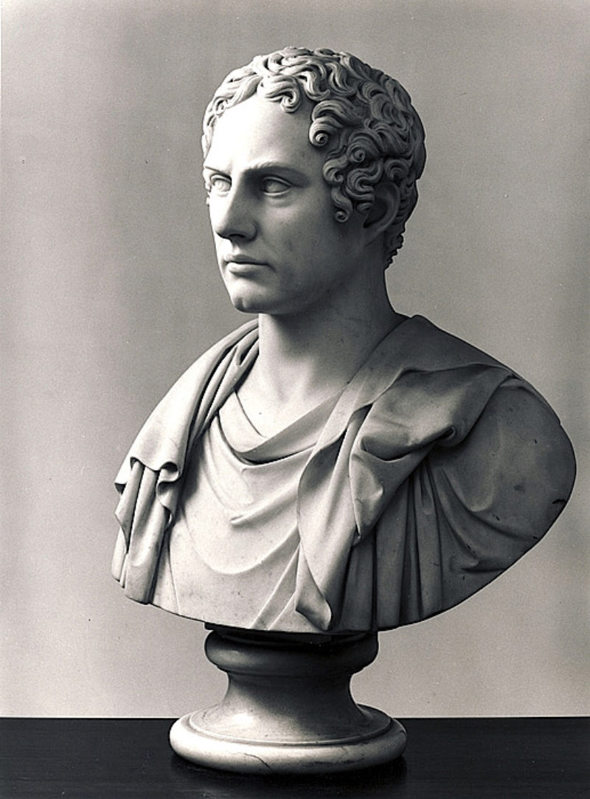
What are the hopes of man? Old Egypt's King
Cheops erected the first pyramid
And largest, thinking it was just the thing
To keep his memory whole, and mummy hid;
But somebody or other rummaging,
Burglariously broke his coffin's lid:
Let not a monument give you or me hopes,
Since not a pinch of dust remains of Cheops.
But I being fond of true philosophy,
Say very often to myself, “Alas!
All things that have been born were born to die,
And flesh (which Death mows down to hay) is grass;
You've pass'd your youth not so unpleasantly,
And if you had it o'er again—'t would pass—
So thank your stars that matters are no worse,
And read your Bible, sir, and mind your purse."
But for the present, gentle reader! and
Still gentler purchaser! the bard—that's I—
Must, with permission, shake you by the hand,
And so “Your humble servant, and good-b'ye!"
We meet again, if we should understand
Each other; and if not, I shall not try
Your patience further than by this short sample—
'T were well if others follow'd my example.
“Go, little book, from this my solitude!
I cast thee on the waters—go thy ways!
And if, as I believe, thy vein be good,
The world will find thee after many days."
When Southey's read, and Wordsworth understood,
I can't help putting in my claim to praise—
The four first rhymes are Southey's every line:
For God's sake, reader! take them not for mine.